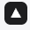

Who it is for
Disaster managers
national and provincial response
Manggala Agni commanders
where and when to act
Provincial governments
deciding when to act
Researchers and auditors
comparing models; checking what was known
It runs in a browser on free open data.
Adding a region is a bounding box.
The peat map is synthetic, so carbon numbers are illustrative.
The model’s edge over a distance-only forecast is small.

SekatApi
Forecasts on the record.
That is exactly why every forecast is now on the record.
Who is it for? Disaster managers, Manggala Agni fire commanders,
provincial governments, researchers comparing fire models,
and auditors checking what was known.
It runs in a browser on free open data; adding a region is a bounding box.
Two honest limits: the peat map is synthetic, so carbon numbers are illustrative,
and the model's edge is small.
That is why every forecast is now on the record.
SekatApi — forecasts on the record.